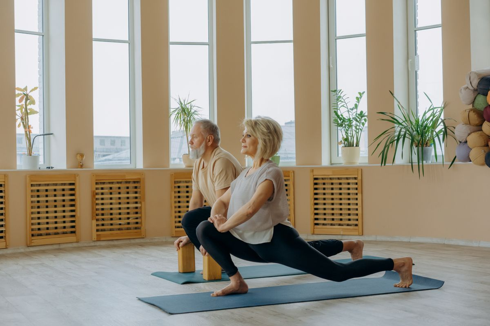

Better balance, fewer falls
Standing and seated balance work strengthens the small stabiliser muscles in your ankles, hips and core — the ones that keep you steady on stairs, in the garden and on uneven ground.
- Steadier on your feet
- More confidence walking
